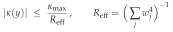

Central result

For any standardized projection, the magnitude of the excess kurtosis is at most the largest source-kurtosis magnitude divided by the effective width of the mixture, its participation ratio. Under balanced mixing the bound is order-tight.
- 1/ROrder-tight decay of kurtosis contrast in balanced mixtures of width R
- 4×More data needed to double the tolerable mixture width
- 0.994R2 of the fit 1.57/R on balanced Student-t mixtures
- 0.03→0.52Contrast at R = 200: full mixture, then purified to m = 5 sources
The question
Excess kurtosis, the standardized fourth cumulant, is a central contrast of ICA and the basis of FastICA’s kurtosis-type nonlinearity, and it is known to fade as mixtures widen: the central limit theorem pushes wide projections toward Gaussianity. Earlier analyses took contrast strength as given. This letter measures how much contrast survives, at the population level, when a projection spreads its weight over many sources. That is the regime of high-model-order group ICA in neuroimaging, where more samples cannot restore contrast that the mixture itself has removed.
Results
- Theorem 1 (Sharp redundancy bound). For any standardized projection y = Σj wjsj, |κ(y)| ≤ κmax Σj w4j = κmax/Reff (Corollary 1). Under balanced mixing (maxj w2j ≤ cb/R) this is at most cbκmax/R, and equal weights with equal kurtoses attain |κ0|/R exactly. Proposition 1 shows that balance is generic inside well-conditioned blocks, with cb growing at most logarithmically in R.
- Corollary 2 (Necessary model-order screening condition). The contrast of a balanced projection can exceed the estimation noise floor σ0/√T only if R < cbκmax√T / σ0, so doubling the tolerable width takes four times the data. The letter gives a coarse recipe that estimates this ceiling from data and flags hopeless model orders.
- Theorem 2 (Purification lower bound). Keeping m ≪ R sources of one kurtosis sign and renormalizing their weights gives |κ(ypur)| ≥ κmin/m, with κmin the smallest kurtosis magnitude among the kept sources, whatever R is. A data-driven version picks the subset from a preliminary separation, without an oracle.
Evidence
Balanced mixtures of Student-t sources follow |κ̂(y)| ≈ 1.57/R (R2 = 0.994), and the estimator noise crosses the population contrast near T ≈ 3 × 104, as the screen predicts. Keeping m = 5 sign-consistent sources holds the contrast near 0.52 (oracle) and 0.59 (data-driven) from R = 20 to 200, while the full mixture falls from about 0.10 to 0.03.
On resting-state fMRI from COBRE (n = 155), the per-subject kurtosis gap between the leading and the typical component time courses shrinks from model order 53 to 100 (paired one-sided Wilcoxon test, p = 1.74 × 10−27). The letter presents this as a supportive sanity check rather than a controlled test, since changing the model order also changes the signal subspace.

Swipe sideways for all panels, or tap to open the full figure.